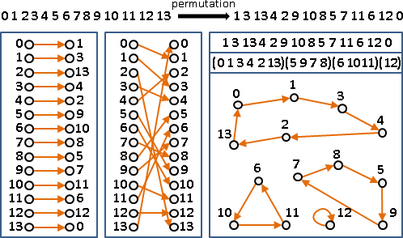
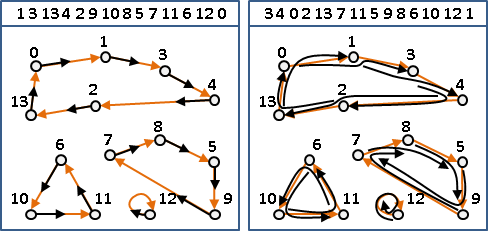
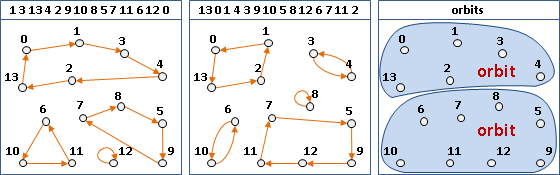
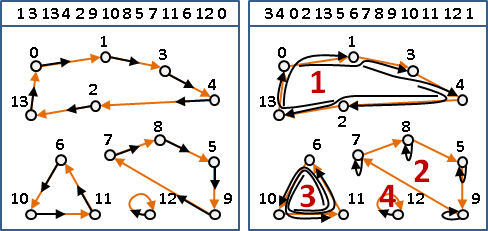
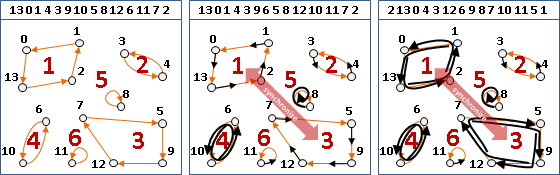
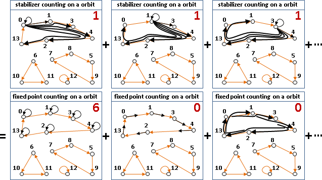
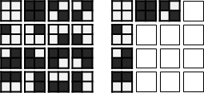
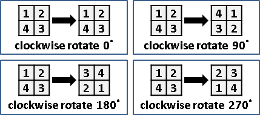
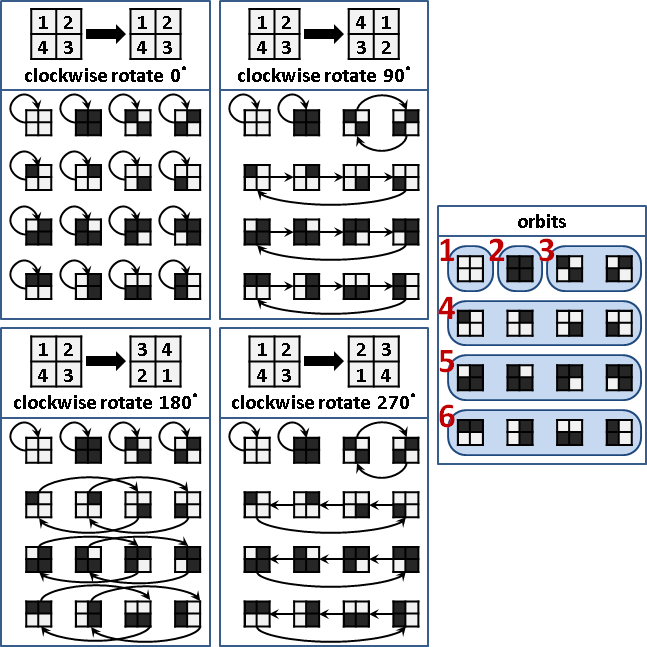
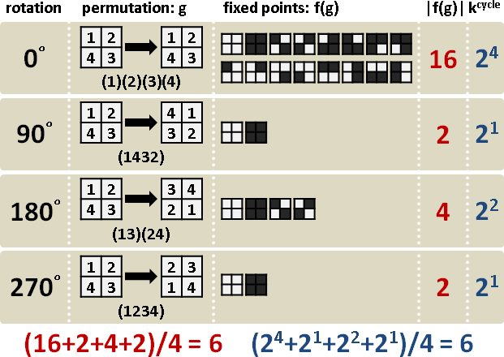

Permutation
Permutation
「排列」可以看成是一對一函數，每個數字變成另一個數字。
以下用「圖」解釋「排列」。「排列」畫成圖，每個點恰有一條出邊、一條入邊，必然形成許多環。一個「排列」就是許多環！
因此「排列」經常寫成循環節的形式。
UVa 11071 ICPC 6899
Orbit
套用一個排列，就是各點同時走一步。
持續套用同一個排列，就是各點同時走一步、走兩步、……。
每個點總是繞行於自己的環裡面。
持續套用兩個不同的排列，順序隨意。相交的環，都能走到。
每個點總是漫步於自己的連通分量裡面。
持續套用多個不同的排列，以此類推。
每一塊走動範圍稱作「軌道」。
Permutation Group
給定一個排列，我們可以找出許多排列，令每個點總是繞行於自己的環裡面，不會離開環。
例如給定一個排列，共有四個環。符合上述條件的其中一個排列是：第一個環走兩步，第二個環走零步，第三個環走三步，第四個環走一步。
符合上述條件的所有的相異排列，總數量等於：每個環的長度相乘！這些排列們稱為一個「排列群」。
另外，若有長度一樣的環（甚至呈倍數關係），可令這些環一齊走相同步數。排列數量減少了，但是仍是一個「排列群」。
給定多個不同的排列，亦得如法炮製。我們可以找出許多排列，令每個點總是繞行於自己的連通分量裡面。符合條件的所有的相異排列，也是一個「排列群」。若有構造一樣的連通分量（甚至呈倍數關係），可令這些連通分量一齊走相同步法，仍是一個「排列群」。
注意到，數學家給予「群」、「排列群」、「群作用」非常明確的定義。此處省略了許多細節。
Orbit-Stabilizer Theorem
o(x) = { g‧x | g∈G } 從x可走到的點們。
orbit （一個環、一個連通分量）
s(x) = { g∈G | g‧x = x } 讓x走回原處的排列們。
stabilizer （x的環走零步，其他環走隨意步）
f(g) = { x∈X | g‧x = x } 套用一個排列g，走回原處的點們。
fixed point （某些環所走的步數，恰等於環的長度的倍數）
（某些連通分量所走的步法，恰回到原處）
軌道衛星定理：一個排列群，任選一點x，|o(x)| |s(x)|相乘，等於排列群大小、等於排列總數量。
將x所在的軌道（暨同步軌道們），分離出來罷了。
不動點計數定理【沒有正式學術名稱】
sum_all_x |s(x)| = sum_all_g |f(g)|
不動點計數定理：一個排列群，所有排列的所有不動點，共有兩種計數方式。
首先觀察單一軌道：
左式：第一點，分別走零一二三……步，走回原處的次數；第二點，分別走零一二三……步，走回原處的次數；……。通通加起來。
右式：所有點各走零步，走回原處的點數；所有點各走一步，走回原處的點數；……。通通加起來。
接著把單一軌道推廣成多個軌道，接著把環上的步數推廣成連通分量上的步法，即得証。
順帶一提，此定理即是微積分Fubini's Theorem的實際應用。
Orbit Counting Theorem
|o(x)| |s(x)| = #(g) [orbit-stabilizer theorem]
sum_one_orbit |o(x)| |s(x)| = |o(x)| #(g) [repeat |o(x)| times]
|o(x)| sum_one_orbit |s(x)| = |o(x)| #(g) [constant]
sum_one_orbit |s(x)| = #(g)
sum_all_orbit |s(x)| = #(orbit) #(g)
sum_all_x |s(x)| = #(orbit) #(g)
sum_all_g |f(g)| = #(orbit) #(g) [Fubini's theorem]
sum_all_g |f(g)|
―――――――――――――――― = #(orbit)
#(g)
軌道計數定理：一個排列群，不動點的平均值，就是軌道數量。
軌道不好算，不動點很好算，因此數學家兜出這個式子。
Pólya Counting Theorem
#(cycles of g)
sum_all_g |f(g)| sum_all_g k
―――――――――――――――― = ―――――――――――――――――――――――――― = #(orbit)
#(g) #(g)
這是特殊案例。排列的對象，不是n個東西，而是n^k個東西：n個相同元件，k種不同顏色，每個元件塗上其中一種顏色，全部的可能性。
雖然有n^k個東西，但是排列規則只有排列n個元件，並未提及元件的顏色。
波利亞計數定理：一、僅排列n個元件，求得虛擬排列群。此時看清楚n^k個東西的排列情況，恰好是真的排列群。可以套用軌道計數定理。二、此時一個排列的不動點數量，恰好是k的次方，次方值是該排列的循環節數量。
證明省略。請看範例。
範例：方格著色
四個方格呈田字，每個方格是白色或黑色，總共2^4 = 16種。
當旋轉視為相同，那麼就剩下6種。
我們的目標是：不比對所有田字，快速算出答案是6種。
旋轉即排列。此例當中，旋轉的基本單位是90°。
以90°為基礎，建構虛擬的排列群，涵蓋所有旋轉方式：順時針旋轉90°、180°、270°、360° = 0°。此排列群是虛擬的排列群，僅考慮4個方格，而非2^4種田字。
看清楚2^4種田字的排列情況，這四個排列恰好是真的排列群：以90°做為基礎，每個環走每種步數、一些同步軌道。
我們的目標是：此排列群的軌道數量，就是答案，一共6種。
實務上沒有人像我這樣把所有排列詳細畫出來，然後找連通分量。快速的方法是軌道計數定理、波利亞計數定理，直接列出不動點，求平均值。此例的不動點，就是旋轉之後，仍舊一樣的田字。
不喜歡圖片的話，請見文字版本。
顏色k=2種 循環節數量
旋轉 排列 不動點數量 括號數量
| g | |f(g)| || cycle | k^cycle
---- | -------------|--------||---------|---------
0° | (1)(2)(3)(4) | 16 || 4 | 2^4 = 16
90° | (1234) | 2 || 1 | 2^1 = 2
180° | (13)(24) | 4 || 2 | 2^2 = 4
270° | (1432) | 2 || 1 | 2^1 = 2
orbit counting theorem: (16+2+4+2)/4 = 6
Pólya counting theorem: [(2^4)+(2^1)+(2^2)+(2^1)]/4 = 6
以上就是波利亞計數定理的用途。
以下另外提供顏色數量為1、2、3時的不動點。讀者可以從中觀察波利亞定理的精神。

UVa 10601 10733 11255 11540
延伸閱讀：其他定理
如果你真的很喜歡群論和數論，可以研究看看。
Lagrange's theorem：子群的大小，整除群的大小。
Cauchy's theorem：當質數p整除群的大小（例如排列群），
那麼此群存在一個元素g（例如一個排列），
使得 g^p = 1（此排列套用p次，每個軌道剛好走零步）。
Cayley's theorem：隨便一個群，
一定可以等價地變成某個對稱群的子群（例如排列群）。